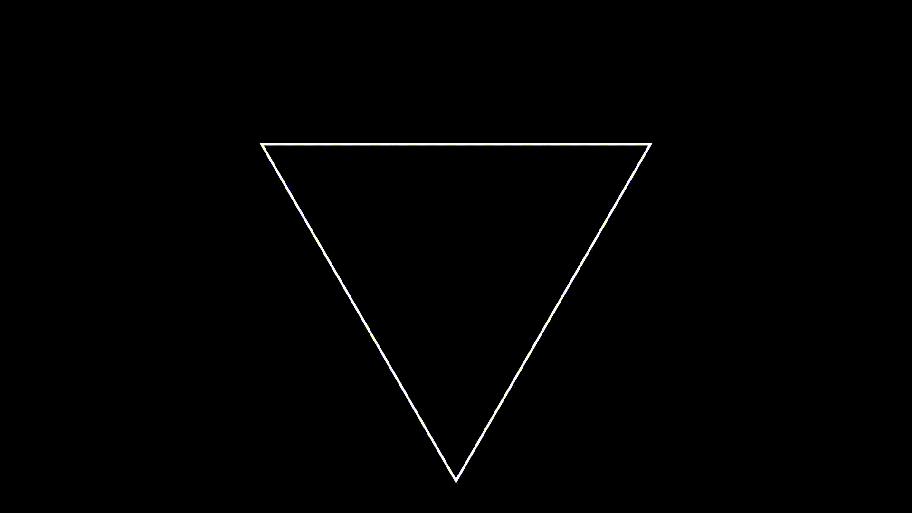
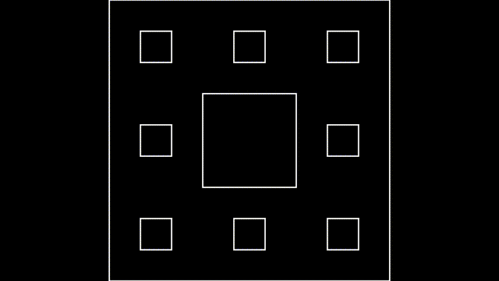
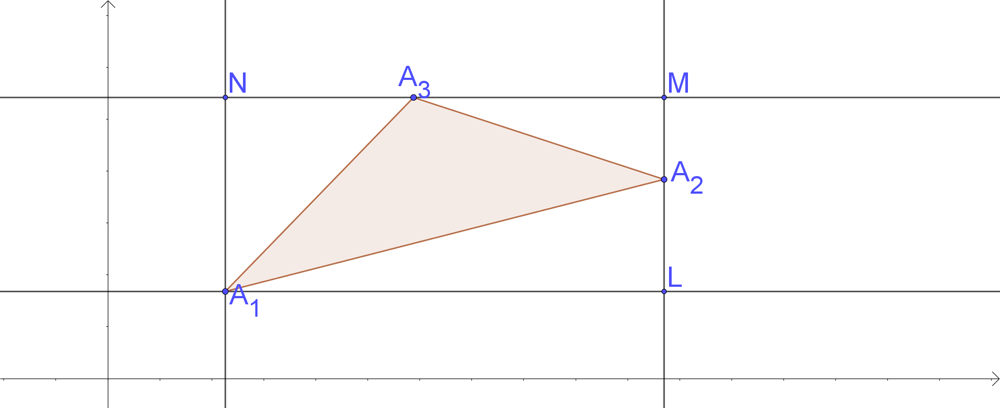
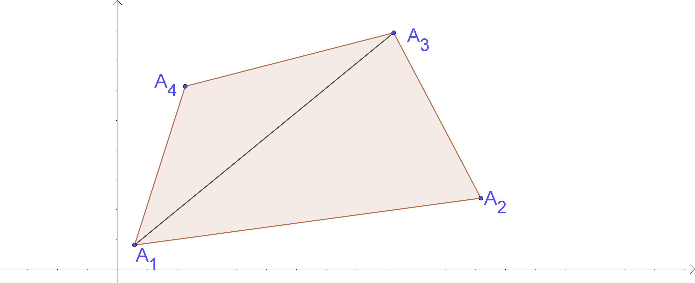

面积公式的发展简史
友情提示：这是一篇优质的长文，以“图形面积”为主线展开，总体的内容结构，可参考下面的思维导图。

在小学的数学教材中，介绍了三角形的面积公式：底乘高除以二。该方法在已知三角形边长的情况下，需要求对应边上的高，而古希腊的几何学家海伦不满足于这样的方法，他期望“直接通过三角形的三边，去计算三角形的面积”。终于，经过长期的思考，得到了“海伦公式”。
海伦公式
【海伦公式】边长分别\(a,b,c\)的三角形，面积为
$$
\boxed{S=\sqrt{p(p-a)(p-b)(p-c)}}
$$
其中\(p=\frac{a+b+c}{2}\)
到目前为止，海伦公式的证明有很多种，但在当年，海伦用几何的方法确实算不上容易。这里介绍一个方法，用余弦定理！
利用余弦定理：\(\cos C=\frac{a^2+b^2-c^2}{2ab}\)
$$
\begin{aligned}
S_{\Delta}ABC &=\frac{1}{2}ab\cdot{sinC}=\frac{1}{2}ab\cdot\sqrt{1-cos^2C}\\
&=\frac{1}{2}ab\cdot\sqrt{1-(\frac{a^2+b^2-c^2}{2ab})^2}\\
&=\sqrt{\frac{4a^2b^2-(a^2+b^2-c^2)^2}{16}}\\
&=\sqrt{\frac{(a+b+c)(a+b-c)(a+c-b)(b+c-a)}{16}}\\
&=\sqrt{p(p-a)(p-b)(p-c)}\\
\end{aligned}
$$
【启示】
-
三角形是一个稳定的结构，三边一旦确定，其面积也随之确定，并可以用三边表示；
-
四边形结构不稳定，只给出四条边长，图形不唯一。而在固定一条对角线的情形下，四边形唯一，此时被分为两个三角形；因此，四边形的面积可以通过四条边，一条对角线来表示，而对角线可用余弦定理求得；
-
除了固定对角线，确定一个内角的情况下，四边形也唯一。因此，用四条边和内角，是不是也能直接计算其面积？
-
四边形结构不稳定，面积不确定，但最值应该是存在的？那么最值是否唯一？其解析式？
四边形面积
公元628年：印度数学家婆罗摩笈多著《婆罗摩历算书》，其中就给出了边长为\(a,b,c,d\)的四边形的面积公式，即
$$
\boxed{S=\sqrt{(p-a)(p-b)(p-c)(p-d)}}
$$
其中\(p=\frac{a+b+c+d}{2}\)
敏锐的你，可能已经觉察到：四边形的结构不稳定，其面积不大可能是只用其边长表达的定值。没错儿，婆罗摩笈多，并没有意识到他给出的这个四边形面积公式是内接四边形的面积公式，而非一般四边形的面积公式！公式从形式上看和三角形的面积公式——海伦公式很像，那么一般的四边形面积公式是什么样的呢？
如果说，三角形的面积是其三条边长的函数；那么四边形的面积函数，其自变量除了边长，应该还包括内角，只需再确定一个内角，四边形就唯一了。那么，接下来就介绍几种方法，去获得四边形的面积公式！首先，给出两种一般四边形的面积公式！
【余弦定理的方法】首先，一条对角线将四边形分为两个三角形，分别使用余弦定理。

证明：
$$
\begin{aligned}
S&=\frac{1}{2}(ad\cdot\sin A+bc\cdot\sin C)\\
2S&=ad\cdot\sin A+bc\cdot\sin C\\
\end{aligned}
$$
两边平方，得
$$
4S^2=a^2d^2\cdot\sin^2A+b^2c^2\cdot\sin^2C+2abcd\cdot\sin A\cdot\sin C
$$
另外，由余弦定理可得
$$
a^2+d^2-2ad\cdot\cos A=b^2+c^2-2bc\cdot\cos C
$$
即
$$
b^2+c^2-a^2-d^2=2bc\cdot\cos C-2ad\cdot\cos A
$$
两边平方，得
$$
(b^2+c^2-a^2-d^2)^2=4b^2c^2\cos^2 C+4a^2d^2\cdot\cos^2A-8abcd\cdot\cos A\cdot\cos C
$$
第一个式子两边乘以4后与第二个式子相加，可得
$$
16S^2+(b^2+c^2-a^2-d^2)^2=4a^2d^2+4b^2c^2-8abcd\cdot\cos(A+C)
$$
$$
\begin{aligned}
16S^2&=4a^2d^2+4b^2c^2-8abcd\cdot\cos(A+C)-(b^2+c^2-a^2-d^2)^2\\
&=4a^2d^2+4b^2c^2+8abcd-16abcd\cdot\cos^2\frac{A+C}{2}-(b^2+c^2-a^2-d^2)^2\\
&=4(bc+ad)^2-(b^2+c^2-a^2-d^2)^2-16abcd\cdot\cos^2\frac{A+C}{2}\\
&=[2(bc+ad)+b^2+c^2-a^2-d^2]\cdot[2(bc+ad)-b^2-c^2+a^2+d^2]-16abcd\cdot\cos^2\frac{A+C}{2}\\
&=[(b+c)^2-(a-d)^2]\cdot[(a+d)^2-(b-c)^2]-16abcd\cdot\cos^2\frac{A+C}{2}\\
&=(a+b+c-d)(b+c+d-a)(a+b+d-c)(a+d+c-b)-16abcd\cdot\cos^2\frac{A+C}{2}\\
&=(2p-2d)(2p-2a)(2p-2c)(2p-2b)-16abcd\cdot\cos^2\frac{A+C}{2}\\
&=16(p-a)(p-b)(p-c)(p-d)-16abcd\cdot\cos^2\frac{A+C}{2}
\end{aligned}
$$
因此，可得到一般四边形的面积公式，不妨称为“边角公式”：
$$
\boxed{S=\sqrt{(p-a)(p-b)(p-c)(p-d)-abcd\cdot\cos^2\frac{A+C}{2}}}
$$
接下来，是另一个形式的四边形面积公式，通过四个边长和两条对角线，计算面积。首先，给出一个“引理”：在任意四边形ABCD中，\(AB=a,BC=b,CD=c,DA=d,AC=e,BD=f\)，\(AC\)交\(BD\)于\(P\)，\(∠APB=P\)，求证：
$$
\boxed{2ef\cdot\cos P=-a^2+b^2-c^2+d^2}
$$

证明：记\(AP=e_1,CP=e_2,BP=f_1,DP=f_2\)，则
$$
\begin{aligned}2ef\cdot\cos P&=2(e_1 + e_2)(f_1+f_2)\cos P\\&=2e_1f_1\cos P+2e_1f_2\cos P + 2e_2f_1\cos P + 2e_2f_2\cos P\\&=e_1^2+f_1^2-a^2-(e_1^2+f_2^2-d^2)\\&-(e_2^2+f_1^2-b^2)+(e_2^2+f_2^2-c^2)\\&=-a^2+b^2-c^2+d^2\end{aligned}
$$
而当\(D\)和\(A\)重合时，即\(d=0,a=f,e=c\)时，有余弦定理
$$
\boxed{2ac\cos(\pi-A)=-a^2+b^2-c^2}
$$
【布雷特·施耐德公式】1842年Bretschneide给出关于四边形面积的公式：
$$
\boxed{16S^2=4e^2f^2−(a^2−b^2+c^2−d^2)^2}
$$
证明：假设四边形的面积为\(S\)(此处考虑凸四边形情形，其他情形类似)，那么
$$
\begin{aligned}
S&=S_\triangle{APB}+S_\triangle{BPC}+S_\triangle{CPD}+S_\triangle{DPA}\\
&=\frac{e_1 f_1\cdot\sin P+e_2 f_2\cdot\sin P+e_1 f_2\cdot\sin(\pi-P)+e_2 f_1\cdot\sin(\pi-P)}{2}\\
&=\frac{1}{2}\sin P[e_1f_2+e_2f_2+e_1f_2+e_2f_1]\\
&=\frac{1}{2}ef\cdot\sin P
\end{aligned}
$$
所以
$$
\begin{aligned}
16 S^2&=4e^2f^2\sin^{2}P\\
&=4e^2f^2-4e^2f^2\cos^{2}P
\end{aligned}
$$
再由引理
$$
2ef\cdot\cos P=-a^2+b^2-c^2+d^2
$$
可证得布雷特-施奈德公式
$$
16S^2=4e^2f^2−(a^2−b^2+c^2−d^2)^2
$$
广义托勒密定理
【广义托勒密定理】在任意四边形\(ABCD\)中(如上图)，\(AB=a,BC=b,CD=c,DA=d,AC=e,BD=f\)，那么
$$
\boxed{e^{2}f^{2}=a^{2}c^{2}+b^{2}d^{2}-2abcd\cdot\cos(A+C)}
$$
证明：根据布雷特-施奈德公式
$$
16S^2=4e^2f^2−(a^2−b^2+c^2−d^2)^2
$$
和另一个四边形面积公式(边角公式)：
$$
16S^2=4(b^2c^2+a^2d^2)-(a^2-b^2-c^2+d^2)^2-8abcd\cdot\cos(A+C)
$$
消元后可得
$$
4e^{2}f^2= 4b^{2}c^{2}+4a^{2}d^{2}-8abcd\cdot\cos(A+C)
$$
【托勒密定理】由广义托勒密定理
$$
e^2f^2=(ac+bd)^2-2abcd[1+\cos(A+C)]
$$
可知
$$
ef=ac+bd \Longleftrightarrow A+C=\pi
$$
托勒密定理是广义托勒密定理的特殊情况：四边形四点共圆。此时
$$ef=ac+bd$$
代入布雷特-施奈德公式：\(\boxed{16S^2=4e^2f^2−(a^2−b^2+c^2−d^2)^2}\)
可得圆内接四边形的面积
$$
\boxed{S=\sqrt{(p-a)(p-b)(p-c)(p-d)}}
$$
其中\(p=\frac{a+b+c+d}{2}\)
圆内接四边形
四边形的四边给定时，其圆内接四边形是特殊情形，因此可以用“一般四边形的面积公式”：
关于“边角公式”的方法：对于四边形内接于圆，会有\(A+C=\pi\)，代入
$$
S=\sqrt{(p-a)(p-b)(p-c)(p-d)-abcd\cdot\cos^2\frac{A+C}{2}}
$$
可得
$$
S=\sqrt{(p-a)(p-b)(p-c)(p-d)}
$$
而反过来，由一般四边形有
$$
\begin{aligned}S&=\sqrt{(p-a)(p-b)(p-c)(p-d)-abcd\cdot\cos^2\frac{A+C}{2}}\\&\leq\sqrt{(p-a)(p-b)(p-c)(p-d)}\end{aligned}
$$
等号成立(取最值)的条件也很明显，就是内接于圆时。
【海伦公式+柯西不等式】接下来，给出第三种方法。

分析：连接\(BD\)，记：
$$
\begin{cases}
BD=x\\
a+b+c+d=2p\\
a+d+x=2m\\
b+c+x=2n
\end{cases}
$$
使用“海伦公式”，可得：
$$
S=\sqrt{m(m-x)(m-a)(m-d)}+\sqrt{n(n-x)(n-b)(n-c)}
$$
令
$$
\sqrt{m(m-x)}=a_1,\sqrt{(m-a)(m-d)}=b_1\\
\qquad\\
\sqrt{(n-b)(n-c)}=a_2,\sqrt{n(n-x)}=b_2
$$
由柯西不等式：
$$
\begin{aligned}
S^2 &\leq[m(m-x)+(n-b)(n-c)]\cdot[(m-a)(m-d)+n(n-x)]\\
&=(p-a)(p-b)(p-b)(p-d)\\
\end{aligned}
$$
当且仅当\(\frac{m(m-x)}{(m-a)(m-d)}=\frac{(n-b)(n-c)}{n(n-x)}\)时，等号成立。即
$$
x^2=\frac{(ac+bd)(ab+cd)}{ad+bc}\qquad\qquad\tag{1}
$$
同理，设\(AC=y\)，可得当
$$
y^2=\frac{(ac+bd)(ad+bc)}{ab+cd}\qquad\qquad\tag{2}
$$
时，四边形面积最大。（1）和（2）两边相乘得：
$$xy=ac+bd$$
这意味着，当四边形内接于圆时，取到最大面积：
$$
\begin{aligned}
S^2&=(p-a)(p-b)(p-b)(p-d)\\
p&=\frac{a+b+c+d}{2}
\end{aligned}
$$
多边形的面积最值
多边形同样不稳定，在给定边长的情况下，存在最大面积。
【克拉美定理】给定边长\(a_1,a_2,\cdots,a_n\)的一切\(n\)边形中，能内接于圆的面积最大。
那么，任意给定边长\(a_1,a_2,\cdots,a_n\)的\(n\)边形，一定能内接于圆吗？一定！接下来是一个构造的过程！
【圆内接多边形的构造】构造性的方法：
-
选取足够大的一个圆！
-
在多边形上任选一个顶点，依次将边拆开，并将其依次放到圆上；
-
然后再逐渐压缩圆的大小，使得多边形的边在圆上滑动；
-
当半径取到某值时，两头正好相遇：构成内接于圆的多边形；
看一直观的动画

【分析的方法】将几何的直观翻译为数学语言：
-
在坐标系中，以原点为圆心，\(r\)为半径做一圆；
-
选取多边形的一个端点至于\(A(0,r)\)，然后在圆上依次取\(A_i,i=1,2,\cdots,n\)，使得
$$
\begin{aligned}
AA_1=a_1,\\
A_1A_2=a_2,\\
\cdots,\\
A_{n-1}A_{n}=a_n
\end{aligned}
$$
- 以\(A\)为圆心，\(a_1\)为半径作圆，两圆交点仍记\(A_1\)（交点为两个，选取从A沿着圆O逆时针旋转遇到的那个），\(A_1\)满足：
$$
\begin{cases}x^2+y^2=r^2\\x^2+(y-r)^2=a_1^2\end{cases}
$$
$$
\begin{cases}x_1=f(r,a_1)\\y_1=g(r,a_1)\end{cases}
$$
- 以\(A_1\)为圆心，\(a_2\)为半径作圆，与圆\(O\)交点记为\(A_2\)（点的取法同上）,\(A_2\)满足：
$$
\begin{cases}x^2+y^2=r^2\\(x-x_1)^2+(y-y_1)^2=a_2^2\end{cases}
$$
-
解出\(A_2\)的坐标：(\begin{cases}x_2=f(r,a_1,a_2)\\y_2=g(r,a_1,a_2)\end{cases}
\)\)
-
重复递归上面的过程，可以解出\(A_n\)的坐标：
$$
\begin{cases}x_n=f(r,a_1,a_2,\cdots,a_n)\\y_n=g(r,a_1,a_2,\cdots,a_n)\end{cases}
$$
- 当\(A\)和\(A_n\)首次重合时，多边形内接于圆，意味着：
$$
\begin{cases}x_n=f(r,a_1,a_2,\cdots,a_n)=0\\y_n=g(r,a_1,a_2,\cdots,a_n)=r\end{cases}
$$
如果将条件放宽一些，限定多边形的周长，各边不定的情况下，其面积的最值问题？首先，从简单、特殊的三角形、四边形开始考虑。
注意：两圆交点的选取，可参考“附录”。
正三角形
【海伦公式】边长为\(a,b,c\)的三角形，其面积为
$$
S=\sqrt{p(p-a)(p-b)(p-c)}\qquad p=\frac{a+b+c}{2}
$$
【均值不等式】对\(n\)个正数，算术平均大于等于几何平均：
$$
\boxed{\frac{a_1+a_2+a_3+\cdots+a_n}{n}\geq\sqrt[n]{a_1a_2a_3\cdots a_n}}
$$
当且仅当\(a_1=a_2=a_3=\cdots=a_n\)时，等号成立。
根据“海伦公式”，结合“均值不等式”，有
$$
\frac{p+(p-a)+(p-b)+(p-c)}{4}\geq\sqrt[4]{p(p-a)(p-b)(p-c)}=\sqrt{S}
$$
等号成立的条件是
$$p=p-a=p-b=p-c$$
即
$$a=b=c$$
时，等号成立，也即定周长的三角形中，正三角形面积最大。
正方形
四边长\(a,b,c,d\)的四边形，内接于圆时，面积最大
$$
S=\sqrt{(p-a)(p-b)(p-c)(p-d)}
$$
其中\(p=\frac{1}{2}(a+b+c+d)\)
同样结合“均值不等式”，可得
$$
\frac{(p-a)+(p-b)+(p-c)+(p-d)}{4}\geq\sqrt[4]{(p-a)(p-b)(p-c)(p-d)}=\sqrt{S}
$$
等号成立的条件是
$$
p-a=p-b=p-c=p-d
$$
即
$$
a=b=c=d
$$
时，等号成立，也即定周长的四边形中，正方形的面积最大。
在正三角形、正方形的结论中，得到方向或猜想：周长为定值的\(n\)边形中，正\(n\)边形的面积最大？但是这一结论的证明，需要寻找其他的方法！
正n边形
新方法的灵感，来自于椭圆：两个焦点与椭圆上一点构成的三角形，周长为定值，当三角形为等腰三角形时，面积最大！

于是，对任意的三角形，都可以重复这样的过程，而逐步逼近正三角形！其具体步骤如下：
-
记三角形的三边为：\((a,b,c)\)
-
固定一边\(c\)，均分另外两边，得到三边：\((\frac{a+b}{2},\frac{a+b}{2},c)\)
-
再固定\(\frac{a+b}{2}\)，均分另外两边，得到三边：\((\frac{a+b}{2},\frac{a+b}{4}+\frac{c}{2},\frac{a+b}{4}+\frac{c}{2})\)
-
按照一个顺序，去递归前面的过程，得到的三边长会越来越接近，且每次的面积都会增加。
第\(n\)次迭代后，三角形的边长相差
$$
\boxed{\lim\limits_{n\rightarrow\infty}\frac{a+b-2c}{2^n}=0}
$$
由此可知，三角形的面积会逐步增大，逐步逼近正三角形。

【启示】
数学问题的解决：
-
其灵感往往来自直观的“几何”；
-
简洁的表达，依赖于“代数”；
-
最后，靠分析，进行精确的计算、论证。
将上面的方法，应用于多边形，依次记内接于圆的多边形个边长为：\((a_1,a_2,a_3,\cdots,a_n)\)
- 从一顶点开始，移动顶点，使得与该顶点连接的两边均分：
$$
(\frac{a_1+a_2}{2},\frac{a_1+a_2}{2},a_3,\cdots,a_n)
$$
- 将新得到的三角形，重新内接于圆，然后按顺(逆)时针，选择下一个顶点，并移动使得与该顶点连接的两边均分：
$$
(\frac{a_1+a_2}{2},\frac{a_1+a_2+2a_3}{4},\frac{a_1+a_2+2a_3}{4},\cdots,a_n)
$$
- 循环上面的步骤：多边形的面积将逐步增加，边长也越来越接近。
【总结】
【新问题】周长相等的正三角形、正方形、正\(n\)边形，其面积规律？
先给出答案：随着边数的增加，面积递增，且逐渐逼近于等周长的圆！看下面表格
| 图形 |
周长 |
内切圆半径 |
面积 |
| 正三角形 |
\(l\) |
\(r_1=?\) |
\(\frac{1}{2}\cdot l\cdot r_1\) |
| 正方形 |
\(l\) |
\(r_2=?\) |
\(\frac{1}{2}\cdot l\cdot r_2\) |
| 正$n$边形 |
\(l\) |
\(r_3=?\) |
\(\frac{1}{2}\cdot l\cdot r_3\) |
问题等价于证明：
$$
r_1 < r_2 < r_n
$$
直接对一般的正\(n\)边形进行考虑：
关系式：
$$
\tan\alpha = \frac{l}{2\cdot n\cdot r}
$$

周长为\(l\)的正\(n\)边形的内切圆半径：
$$
r=\frac{l}{2\pi}\times\frac{\frac{\pi}{n}}{\tan{\frac{\pi}{n}}}
$$
而函数
$$
y=\frac{x}{\tan{x}},\quad x\in (0,\pi)
$$
单调递减。
所以，周长给定的正\(n\)边形，其面积会随着边数的增加而增长！周长为\(l\)的正\(n\)边形：
-
随着\(n\)的增大，逐渐逼近于圆；
-
多边形夹在外接圆与内切圆之间。
再假设外接圆半径为：\(R\)
$$
\frac{r}{R}=\cos\frac{\pi}{n}
$$

【等周问题】是分析学中的一个基本问题：当曲线的周长或曲面的表面积相等时，求其所围面积或体积为最大时的曲线和曲面。该问题也叫古典等周问题或特殊等周问题。
等周问题起源于古希腊传说，据载那时希腊人已知道曲线等周问题的解答是圆。公元前180年左右古希腊数学家芝诺多罗斯写过一篇有关等周图形的论著，可惜已失传，其中若干命题被公元4世纪的学者帕波斯记载，得以保存。1697年瑞士数学家雅各布·伯努利重提等周问题，将它纳入分析学中曲线和求极值的范畴中讨论，由此引起变分学的发展。欧拉、拉格朗日、勒让德等人对此做出贡献。1838-1842年瑞士数学家施泰纳在假定极大性存在的前提下用综合方法证明了：在具有一定周长的所有平面图形中，圆周包围着最大的面积。他还证明了在具有一定周长的所有三角形中，等边三角形具有最大的面积。1870年德国数学家外尔斯特拉施用变分法证明了极大性的存在。
发散思维
在前面是以面积为主线，先后介绍了三角形的“海伦公式”，然后是2种一般四边形的面积公式，接着是圆内接四边形的面积公式，以及多边形和正多边形的面积最值问题。那么，接下来，发散一下思维，不受限于面积主线。

同样，由“海伦公式”得到启发，欧拉推广到四面体，直接用四面体的6个棱长计算其体积；如果四面体的棱长分别为\(a,b,c,p,q,r\)，则四面体的体积为：
$$
V^{2}=\frac{1}{36}\left|\begin{array}{ccc}
p^{2} & \frac{p^{2}+q^{2}-c^{2}}{2} & \frac{r^{2}+p^{2}-b^{2}}{2} \\
\frac{p^{2}+q^{2}-c^{2}}{2} & q^{2} & \frac{q^{2}+r^{2}-a^{2}}{2} \\
\frac{q^{2}+r^{2}-a^{2}}{2} & \frac{r^{2}+p^{2}-b^{2}}{2} & r^{2}
\end{array}\right|
$$
欧拉是从向量混合积的概念推导出来的。
另外，从上面的内容，很容易知道：周长有限的封闭曲线，在平面上所围图形的面积有限。反过来考虑：具有有限面积的图形，其周长一定有限吗？第一个给出否定答案的是科赫，他构造了著名的“科赫雪花曲线”。
科赫雪花曲线的构造过程：

记录一下图形的构造
| 边数：\(a_n\) |
边长：\(b_n\) |
周长：\(L_n\) |
面积：\(S_n\) |
| 3 |
1 |
3 |
\(\frac{\sqrt{3}}{4}\) |
| \(3\times 4\) |
\(\frac{1}{3}\) |
4 |
\(\frac{\sqrt{3}}{4}\times(1+\frac{1}{9}\times 3)\) |
| \(3\times 4^2\) |
\(\frac{1}{3^2}\) |
\(\frac{4^2}{3}\) |
\(\frac{\sqrt{3}}{4}\times(1+\frac{1}{3}+\frac{3\times 4}{9^2})\) |
| \(\cdots\) |
\(\cdots\) |
\(\cdots\) |
\(\cdots\) |
| \(3\times 4^n\) |
\(\frac{1}{3^n}\) |
\(\frac{4^n}{3^{n-1}}\) |
\(S_n\) |
其中：
$$
\boxed{S_n=\frac{\sqrt{3}}{4}\times(1+\frac{1}{3}+\frac{3\times 4}{9^2}+\cdots+(\frac{1}{9})^n \times 3 \times 4^{n-1})}
$$
由此可知，周长是发散的，面积是收敛的。另外，意大利数学家欧内斯托·切萨罗注意到科赫曲线部分与整体的相似性（自相似性）。那时的一些曲线和概念形成了分形几何思想的源泉：
-
1875年，德国数学家魏尔斯特拉斯构造了处处连续不可微的函数。
-
1883年，德国数学家康托尔构造了具有奇异性质的三分康托尔集。
-
1890年，意大利数学家皮亚诺构造了能够填充整个空间的曲线。
-
1904年，瑞典数学家科赫设计出雪花曲线。
-
1910年，豪斯道夫提议集合性质与量的研究，提出分数维概念。
-
1915年，波兰数学家希尔宾斯基设计了像地毯和海绵的几何图形。
希尔宾斯基三角形的绘制过程：
-
画一个（正）三角形；
-
连接三边的中点，分为四个三角形；
-
保留中间的三角形；
-
对其余的三个小三角形，重复上述步骤。
希尔宾斯基地毯的绘制：
-
画一个正方形；
-
等分为9个小正方形；
-
保留中间的小正方形；
-
对其余的8个小正方形，继续前面的操作；

1975年，曼德布罗特在《自然界中的分形几何》一书中正式引入分形概念。尽管至今还没有一个让大家满意的分形定义，但分形所具有的几个特点是公认的：
坐标方法
新思想、新工具、新方法的出现，可用于对原问题进行重新描述和解答。《解析几何》的诞生，标志着人类的数学，从常量进入变量时代。代数与几何相结合，实现了用代数的方法解决几何问题，尤其几何的证明转化为代数计算。因此，我们用坐标的方法，重新思考图形的面积：
-
将一个平面图形放到平面直角坐标系中，可用坐标描述图形！
-
对于三角形、四边形、多边形，只需依次记录其顶点坐标；首先，考虑最简单的三角形！
-
把一个三角形放到平面直角坐标系中，其三个顶点对应三个坐标，面积可以直接用该坐标表达？
-
为了进一步简化，可将三角形的一个顶点放到原点！
-
然后推广到一般的三角形；
三角形面积
首先，考虑特殊的情形：在平面直角坐标系\(xOy\)中，设点\(A(x_1,y_1),B(x_2,y_2)\)，则
$$
\boxed{S_{\triangle O A B}=\frac{1}{2}\left|\operatorname{det}\left[\begin{array}{ll}
x_{1} & y_{1} \\
x_{2} & y_{2}
\end{array}\right]\right|=\frac{1}{2}\left|x_{1} y_{2}-x_{2} y_{1}\right|}
$$
提供3种计算方法：
-
底\(\times\)高\(\div 2\)
-
向量叉积
-
向量混合积
【底\(\times\)高\(\div\) 2】向量\(\vec{u}=(-y_1,x_1)\)与\(\overrightarrow{OA}=(x_1,y_1)\)垂直，所以\(OA\)边上的高为
$$
h=\frac{|\overrightarrow{O B} \cdot \vec{u}|}{|\vec{u}|}=\frac{\left|x_{1} y_{2}-x_{2} y_{1}\right|}{\sqrt{x_{1}^{2}+y_{1}^{2}}}
$$
所以
$$
S_{\triangle O A B}=\frac{1}{2}|O A| \cdot h=\frac{1}{2} \sqrt{x_{1}^{2}+y_{1}^{2}} \cdot \frac{\left|x_{1} y_{2}-x_{2} y_{1}\right|}{\sqrt{x_{1}^{2}+y_{1}^{2}}}=\frac{1}{2}\left|x_{1} y_{2}-x_{2} y_{1}\right|
$$

【向量叉积】空间直角坐标系中，\(\overrightarrow{O A}=\left(x_{1}, y_{1}, 0\right), \overrightarrow{O B}=\left(x_{2}, y_{2}, 0\right)\)，则
$$
\begin{aligned}
S_{\triangle O A B} &=\frac{1}{2}|O A| \cdot|O B| \cdot \sin \angle A O B=\frac{1}{2}|\overrightarrow{O A} \times \overrightarrow{O B}| \\
&=\frac{1}{2}\left|\left[\begin{array}{ccc}
i & j & k \\
x_{1} & y_{1} & 0 \\
x_{2} & y_{2} & 0
\end{array}\right]\right|\\&=\frac{1}{2}\left|\left| \begin{array}{ll}
x_{1} & y_{1} \\
x_{2} & y_{2}
\end{array}\right|k\right| =\frac{1}{2}\left|x_{1} y_{2}-x_{2} y_{1}\right|
\end{aligned}
$$
【向量混合积】将三个点\(P(0,0,1), \quad A\left(x_{1}, y_{1}, 1\right), \quad B\left(x_{2}, y_{2}, 1\right)\)，放到平面\(z=1\)上，则
$$
\begin{aligned}
S_{\triangle P A B} &=3 \cdot V_{O-P A B}=3 \cdot \frac{1}{6}|\overrightarrow{O P} \cdot(\overrightarrow{O A} \times \overrightarrow{O B})| \\
&=\frac{1}{2}\left|\operatorname{det}\left[\begin{array}{ccc}
0 & 0 & 1 \\
x_{1} & y_{1} & 1 \\
x_{2} & y_{2} & 1
\end{array}\right]\right|=\frac{1}{2} \left| \operatorname{det}\left[\begin{array}{ll}
x_{1} & y_{1} \\
x_{2} & y_{2}
\end{array}\right]\right|
\end{aligned}
$$
【一般情形】对于一般的三角形\(\triangle{ABC}\)，设\(A(x_1,y_1),B(x_2,y_2),C(x_3,y_3)\)，则
$$
\begin{array}{l}
\overrightarrow{A B}=\left(x_{2}-x_{1}, y_{2}-y_{1}\right) \\
\overrightarrow{A C}=\left(x_{3}-x_{1}, y_{3}-y_{1}\right)
\end{array}
$$
所以
$$
S_{\triangle A B C}=\frac{1}{2}\left|\operatorname{det}\left[\begin{array}{ll}
x_{2}-x_{1} & y_{2}-y_{1} \\
x_{3}-x_{1} & y_{3}-y_{1}
\end{array}\right]\right|
$$
此时，通过变换，转化为前面讨论的特殊情形。
【空间平面】在空间直角坐标系中,将三个点
$$
A\left(x_{1}, y_{1}, 1\right), \quad B\left(x_{2}, y_{2}, 1\right), \quad C\left(x_{3}, y_{3},1\right)
$$
放到平面\(z=1\)上，则
$$
S_{\triangle A B C}=3 V_{O-A B C}=3 \cdot \frac{1}{6}|\overrightarrow{O A} \cdot(\overrightarrow{O B} \times \overrightarrow{O C})|=\frac{1}{2}\left|\operatorname{det}\left[\begin{array}{lll}
x_{1} & y_{1} & 1 \\
x_{2} & y_{2} & 1 \\
x_{3} & y_{3} & 1
\end{array}\right]\right|
$$
高斯凸多边形面积公式
【高斯面积公式】设\(A_1A_2\cdots A_n\)为任意凸\(n\)边形，每个顶点\(A_i\)的坐标为\((x_i,y_i)\)，其中\(1\leq i\leq n\)，记该多边形的面积公式为\(S\)，则
$$
S=\frac{1}{2}\left|\sum_{i=1}^{n}\left(x_{i} y_{i+1}-x_{i+1} y_{i}\right)\right|=\frac{1}{2}\left|\sum_{i=1}^{n} x_{i}\left(y_{i+1}-y_{i-1}\right)\right|
$$
其中\(x_0=x_{n},y_0=y_{n},x_{n+1}=x_1,y_{n+1}=y_1\)
对于上述“高斯面积公式”，可用数学归纳法证明。
【\(n=3\)的情形】

$$
\begin{aligned}
S_{\triangle A_{1} A_{2} A_{3}}&=S_{A_{1} L M N}-S_{\mathrm{Rt} \triangle A_{1} A_{2} L}-S_{\mathrm{Rt} \triangle A_{2} A_{3} M}-S_{\mathrm{Rt} \triangle A_{1} A_{3} N}\\
=&\left(x_{2}-x_{1}\right)\left(y_{3}-y_{1}\right)-\frac{1}{2}\left(x_{2}-x_{1}\right)\left(y_{2}-y_{1}\right)\\
&-\frac{1}{2}\left(x_{2}-x_{3}\right)\left(y_{3}-y_{2}\right)-\frac{1}{2}\left(x_{3}-x_{1}\right)\left(y_{3}-y_{1}\right)\\
=& x_{2} y_{3}-x_{2} y_{1}-x_{1} y_{3}+x_{1} y_{1}-\frac{1}{2}\left(x_{2} y_{2}-x_{2} y_{1}-x_{1} y_{2}+x_{1} y_{1}\right)\\
&-\frac{1}{2}\left(x_{2} y_{3}-x_{2} y_{2}-x_{3} y_{3}+x_{3} y_{2}\right)-\frac{1}{2}\left(x_{3} y_{3}-x_{3} y_{1}-x_{1} y_{3}+x_{1} y_{1}\right)\\
=& \frac{1}{2}\left(x_{1} y_{2}-x_{2} y_{1}\right)+\frac{1}{2}\left(x_{2} y_{3}-x_{3} y_{2}\right)+\frac{1}{2}\left(x_{3} y_{1}-x_{1} y_{3}\right)\\
=& \frac{1}{2} | \sum_{i=1}^{3}\left(x_{i} y_{i+1}-x_{i+1} y_{i}\right)|
\end{aligned}
$$
【\(n=4\)的情形】

添加一条对角线，四边形被分为两个三角形：
$$
S=S_{ A_{1} A_{2} A_{3}A_4}=S_{\triangle A_{1} A_{2} A_{3}}+S_{\triangle A_{1} A_{3} A_{4}}
$$
利用\(n=3\)的结论
$$
\begin{aligned}
S=& \frac{1}{2}\left(x_{1} y_{2}-x_{2} y_{1}\right)+\frac{1}{2}\left(x_{2} y_{3}-x_{3} y_{2}\right)+\frac{1}{2}\left(x_{3} y_{1}-x_{1} y_{3}\right) \\
&+\frac{1}{2}\left(x_{1} y_{3}-x_{3} y_{1}\right)+\frac{1}{2}\left(x_{3} y_{4}-x_{4} y_{3}\right)+\frac{1}{2}\left(x_{4} y_{1}-x_{1} y_{4}\right) \\
=& \frac{1}{2}\left(x_{1} y_{2}-x_{2} y_{1}\right)+\frac{1}{2}\left(x_{2} y_{3}-x_{3} y_{2}\right) \\
&+\frac{1}{2}\left(x_{3} y_{4}-x_{4} y_{3}\right)+\frac{1}{2}\left(x_{4} y_{1}-x_{1} y_{4}\right) \\
=& \frac{1}{2}\left|\sum_{i=1}^{4}\left(x_{i} y_{i+1}-x_{i+1} y_{i}\right)\right|
\end{aligned}
$$
从而高斯公式对四边形也成立。使用归纳法，可证明一般情形。
附录
如图，两个圆O：\(x^2+y^2=r^2\)和圆：\((x-x_0)^2+(y-y_0)^2=a^2\)相交于两点\(A_1=(x_1,y_1),A_2=(x_2,y_2)\)，其中\(A=(x_0,y_0)\)在圆O上；沿着圆O的逆时针方向，从\(A\)出发遇到的第一个交点的坐标为：
$$
(\frac{\Delta(x_1+x_2)+|\Delta|(x_1-x_2)}{2\Delta},\frac{\Delta(y_1+y_2)+|\Delta|(y_1-y_2)}{2\Delta})
$$
其中
$$
\begin{cases}
x_1=\frac{y_0a\sqrt{4r^2-a^2}+(2r^2-a^2)x_0}{2r^2}\\
y_1=\frac{-x_0a\sqrt{4r^2-a^2}+(2r^2-a^2)y_0}{2r^2}\\
x_2=\frac{-y_0a\sqrt{4r^2-a^2}+(2r^2-a^2)x_0}{2r^2}\\
y_2=\frac{x_0a\sqrt{4r^2-a^2}+(2r^2-a^2)y_0}{2r^2}\\
\Delta=\sqrt{2}r-a
\end{cases}
$$
分析： 解方程组：
$$
\begin{cases}
x^2+y^2=r^2\\
(x-x_0)^2+(y-y_0)^2=a^2\\
x_0^2+y_0^2=r^2\\
\end{cases}
$$
解得两圆交点坐标。
关于两点\(A_1=(x_1,y_1),A_2=(x_2,y_2)\)的位置(通过向量积来判断):
$$
\begin{aligned}
\Delta &=x_1*y_2-x_2*y_1\\
&=\frac{ar^2\sqrt{4r^2-a^2}}{2}(r^2y_0^2+2x_0^2)(2r^2-a^2)
\end{aligned}
$$
因为只需要确定\(\Delta\)的符号，所以重新记\(\Delta=\sqrt{2}r-a\)
若\(\Delta<0,A_1\)在\(A_2\)的逆时针方向；若\(\Delta>0,A_1\)在\(A_2\)的顺时针方向。整理为引理中的形式。